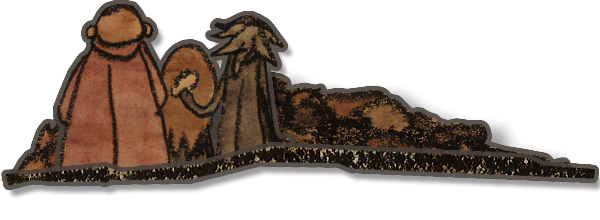

Lorsque les enquéteurs la découvrirent, Blanche se tenait debout, seule et trempée dans les jardins de Launderley, devant une pile de vingt-neuf cadavres. Rapidement conduite en sécurité à la ville voisine, la jeune fille, dotée d'une mémoire eidétiques, dessina tout ce qu'elle vit durant la nuit de ce drame. Les enquêteurs, Elbert et Eva, vont alors questionner Blanche au sujet de ces dessins. Le temps presse : Certains enfants de Launderley ont disparus et, les enquêteurs l'espèrent, peuvent, encore être sauvés.
Launderley est une application informatique. Pour y jouer, vous devrez posséder (ou créer) un compte Steam, puis la télécharger en suivant ce lien.